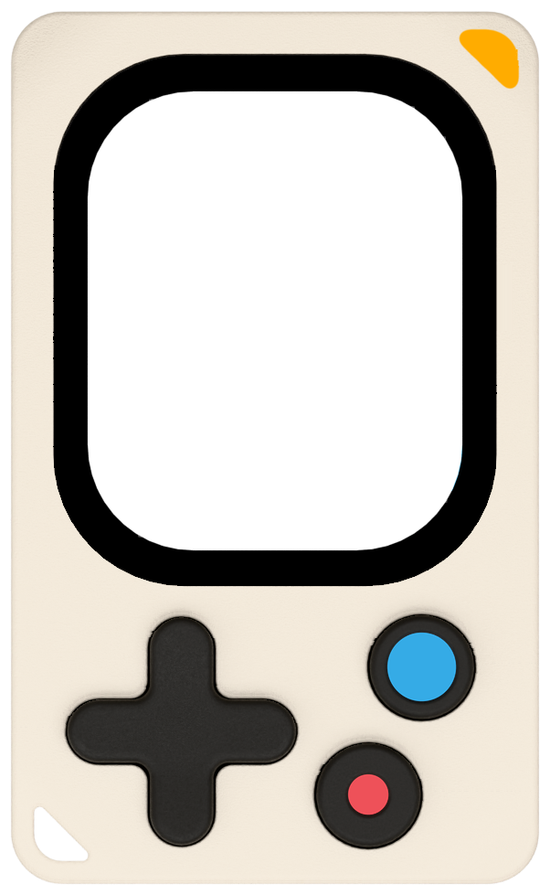

kode-sim runs kodeOS and your apps on an emulated ESP32-P4, the real firmware instruction by instruction, without the board. One command installs everything and opens the Dot in Chrome.

A Mac with Apple silicon (M1 or later). About 6 GB free.
$ curl -fsSL https://sim.kode.diy/install-mac.sh | bashPaste it in Terminal (Applications › Utilities).
x86_64 or arm64, with Debian, Ubuntu, Fedora or Arch. About 6 GB free.
$ curl -fsSL https://sim.kode.diy/install-linux.sh | bashPaste it in a terminal. It asks for your password once, for the system packages.
Windows 10 (2004 or later) or 11, 64-bit. Runs through WSL 2 with Ubuntu: the emulator is built for Linux and macOS. About 8 GB free.
> powershell -ExecutionPolicy Bypass -c "irm https://sim.kode.diy/install-windows.ps1 | iex"Paste it in PowerShell or Terminal (Start › type “Terminal”).
Run the same command. It skips what is there, updates kode-sim and kodeOS, and opens the Dot.
Click the screen to touch it. T top button, B bottom button, the arrow keys for the pad.
Build any kode-sdk app and install it in the running kodeOS, as on the board.
# a new app from the template git clone https://github.com/kodediy/kode-app-template.git my-app # the tools, in a new terminal . ~/.espressif/v6.1/esp-idf/export.sh # into the kodeOS that is running kode-sim install my-app # or on its own, without kodeOS kode-sim run my-app
| What | Where |
|---|---|
| kode-sim and kodeOS | ~/kode |
| ESP-IDF v6.1 | ~/.espressif |
| Rust | ~/.cargo, ~/.rustup |
| esp-emu 1.2.0 and the C5's firmware | kode-sim's cache, on its first run |
The kode-sim command | ~/.local/bin |